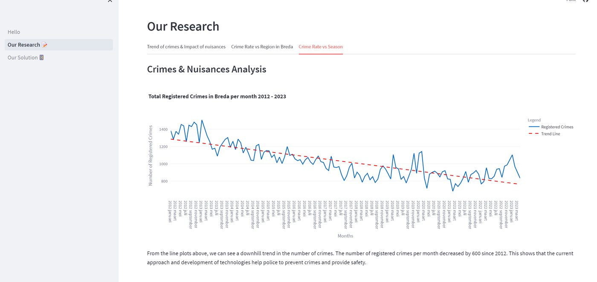
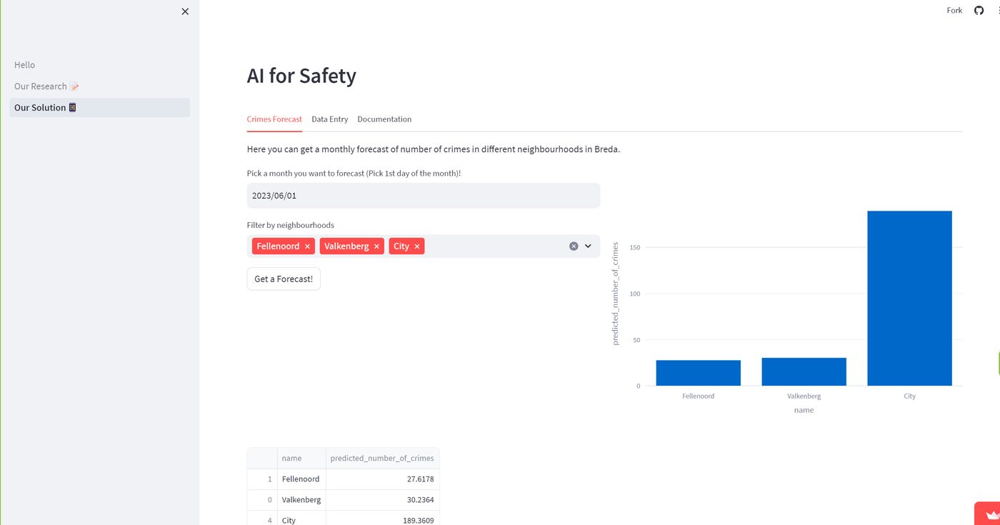

03 / the dashboard



// Municipality of Breda · 2023
Improving neighbourhood safety with data-driven insights
A five-person Scrum project to improve quality of life in Breda through safety. We built a Streamlit dashboard combining research into the factors behind neighbourhood safety with a machine learning model that forecasts monthly crime rates.
Our team set out to support city security with two things: research into how external factors relate to safety across Breda's neighbourhoods, and a predictive model to forecast crime rates and inform security measures.


The combination of research, prediction, and interactive visualisation gave local authorities actionable insight to support safety work across the city.